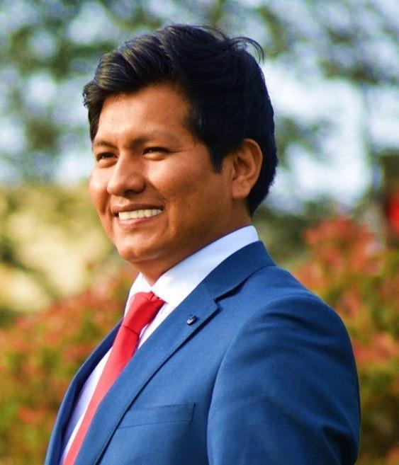

Criterio técnico
para cuidar lo esencial.
Fredy Gustavo Chambi Canahuire
Ingeniero químico colegiado · Gestión ambiental y recursos hídricos

01 — 26
& AGUA
Experiencia técnica.
Mirada integral.
UN PERFIL QUE CONECTA
El trabajo de campo, la evidencia analítica y el cumplimiento normativo se encuentran en cada etapa de su trayectoria.
Experiencia que
se traduce en acción.
Responsabilidades, metodología y resultados documentados en el CV.
Impacto y
contribuciones.
Las cifras aquí mostradas aparecen explícitamente en el CV. Las demás contribuciones se describen sin atribuir resultados no cuantificados.
Conocimiento
aplicado al territorio.
Competencias desarrolladas en funciones técnicas, consultoría y análisis.
Entornos de trabajo
Base técnica.
Aprendizaje continuo.
Formación académica y cursos de actualización recogidos en el CV.
¿Qué puedo
aportar?
Convertir información técnica y requisitos normativos en acciones claras para el cuidado de las personas, los procesos y los recursos.
El siguiente paso
empieza por una conversación.
Para oportunidades relacionadas con gestión ambiental, recursos hídricos, agua y calidad.